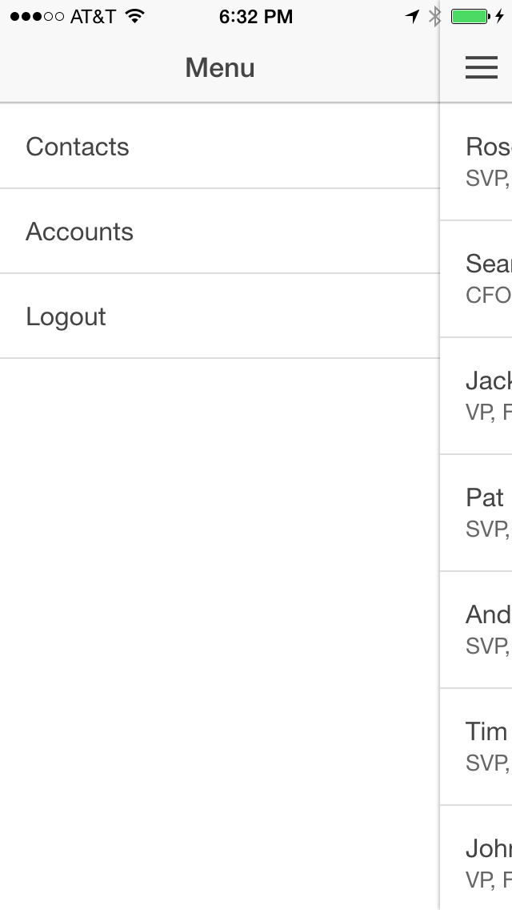
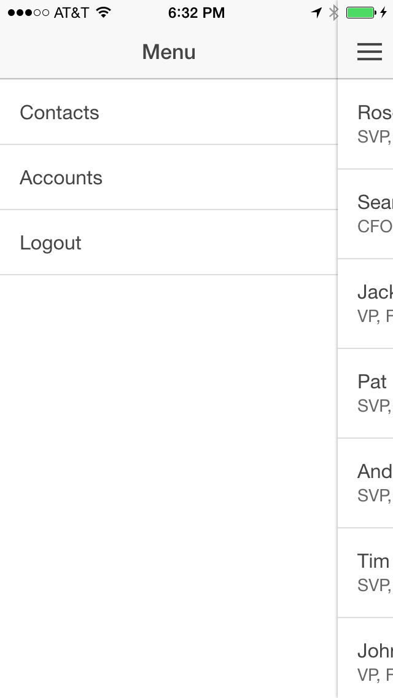
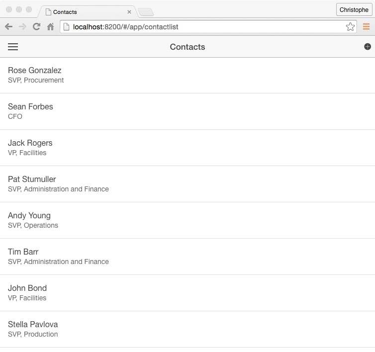

Salesforce and Ionic collaborated to create a Salesforce Starter Application for Ionic. You can create a Salesforce starter application directly from the Ionic CLI. The starter application is preconfigured to work with the Salesforce Mobile SDK. It uses Salesforce OAuth to authenticate, and the Salesforce REST APIs to access and manipulate Salesforce data.
Make sure Cordova is installed on your computer
Install the Ionic CLI
npm install -g ionic
On a Mac, you may have to use sudo:
sudo npm install -g ionic
Create a Salesforce application using the Ionic CLI:
ionic start MyIonicApp salesforce
MyIonicApp is the name of your appsalesforce is the name of the Ionic template to use when creating the appNavigate (cd) to the MyIonicApp directory and examine the project structure
Add the Salesforce Mobile SDK plugin:
cordova plugin add https://github.com/forcedotcom/SalesforceMobileSDK-CordovaPlugin
To run the application on a mobile device or in an emulator, the SDK for the mobile platform you target needs to be installed on your computer. For example, you need Xcode and the iOS SDK to build the app for iOS, and you need the Android SDK to build the app for Android. If the SDK is not installed on your computer, you won't be able to build the app for that platform, but you can still run the application in your browser. In that case, skip this step and go directly to Step 3 below.
Build the app for a specific platform. For example, to build the app for iOS:
ionic build ios
Run the project. For example, for iOS, open the project (platforms/ios/MyIonicApp.xcodeproj) in Xcode and run it in the emulator or on your iOS device.
 

If the build fails in Xcode, select the MyIonicApp target, click the Build Settings tab, search for bitcode, select No for Enable Bitcode, and try again.
To run the application in the browser using force-sever:
Make sure force-server is installed on your system
Navigate (cd) to your project's www directory
Start the server
force-server
This command will start the server on port 8200, and automatically load your app (http://localhost:8200) in a browser window. You'll see the Salesforce login window (make sure you enable the popup), and the list of contacts will appear after you log in.

You can change the port number and the web root. Type the following command for more info:
force-server --help